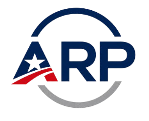

American Renewal Party ARPThe United States does not need more political warfare. It needs stability, results, and leadership capable of bringing Americans together again.
Estados Unidos no necesita más guerra política. Necesita estabilidad, resultados y un liderazgo capaz de unir nuevamente a los estadounidenses."We are not here to represent a traditional party. We are here to represent millions of Americans who feel that politics stopped listening to them. We do not want a country divided between political enemies. We want a country united by common goals." "No estamos aquí para representar a un partido tradicional. Estamos aquí para representar a millones de estadounidenses que sienten que la política dejó de escucharlos. No queremos un país dividido entre enemigos políticos. Queremos un país unido por objetivos comunes."
Pragmatic leadership for a new era.
Liderazgo pragmático para una nueva era.Born in Phoenix to a public school teacher and a logistics worker, Evelyn understands the struggle of the middle class. Shaped by the 2008 financial crisis as a community advocate, she later became Governor of Arizona—a swing state—where she passed bipartisan budgets and attracted tech manufacturing.
Nacida en Phoenix de madre maestra y padre trabajador, Evelyn entiende la lucha de la clase media. Forjada por la crisis de 2008, llegó a ser Gobernadora de Arizona, donde aprobó presupuestos bipartidistas y atrajo industria tecnológica.A Rust Belt native and supply chain expert. As former Ohio Treasurer and CEO of an auto-parts manufacturer, David brings unmatched fiscal discipline. A moderate institutionalist who left his former party due to populist chaos, he proves that pro-business rigor and modern family values go hand in hand.
Nativo del cinturón industrial y experto en cadena de suministro. Ex Tesorero de Ohio y ex CEO, David aporta disciplina fiscal. Un institucionalista moderado que demuestra que el rigor pro-empresa y los valores familiares modernos van de la mano.Five core pillars to restore the American Middle Class.
No son promesas. Es gobernanza práctica. Cinco pilares para restaurar la clase media.Tax relief conditioned on local job creation and cutting bureaucracy to lower the cost of groceries and energy permanently.
Alivio fiscal condicionado a la creación de empleo local y reducción de burocracia para bajar permanentemente el costo de alimentos y energía.Implacable biometric security with rapid asylum audits (30-day resolution) and a visa system based strictly on labor needs.
Seguridad biométrica implacable con auditorías rápidas de asilo (resolución en 30 días) y sistema de visados basado en necesidades laborales.Incentivizing local zoning deregulation for massive private construction and offering targeted tax credits for young first-time buyers.
Incentivar desregulación local para construcción privada masiva y créditos fiscales para jóvenes que compran su primera vivienda.Fixed 0% federal interest rates and penalizing universities that artificially inflate costs. Pay exactly what you borrowed.
Tasas de interés federales al 0% fijo y penalización a universidades que inflan costos. Paga exactamente lo que pediste prestado.Fully funding local police while implementing modern tech, crime prevention programs, and aggressive mental health support.
Financiamiento total policial implementando tecnología moderna, prevención del delito y apoyo agresivo a la salud mental.